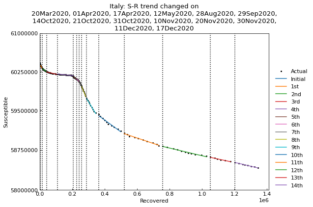

Usage (quickest version)¶
Preparation¶
[1]:
# Standard users
# !pip install covsirphy
[2]:
# Developers (Note: this notebook is in example directory)
import os
os.chdir("../")
[3]:
from pprint import pprint
[4]:
import covsirphy as cs
cs.__version__
[4]:
'2.8.3'
Dataset preparation¶
Download the datasets to “input” direcotry and load them.
If “input” directory has the datasets, DataLoader will load the local files. If the datasets were updated in remote servers, DataLoader will update the local files automatically.
[5]:
# Standard users and developers
data_loader = cs.DataLoader("input")
# The number of cases (JHU style)
jhu_data = data_loader.jhu(verbose=False)
# Population in each country
population_data = data_loader.population(verbose=False)
Note:
Datasets were retrieved via COVID-19 Data Hub and the citation is
Guidotti, E., Ardia, D., (2020), “COVID-19 Data Hub”, Journal of Open Source Software 5(51):2376, doi: 10.21105/joss.02376.
Scenario analysis can be performed for the following countries.
[6]:
pprint(set(jhu_data.countries()) & set(population_data.countries()), compact=True)
{'Afghanistan', 'Albania', 'Algeria', 'Andorra', 'Angola',
'Antigua and Barbuda', 'Argentina', 'Armenia', 'Australia', 'Austria',
'Azerbaijan', 'Bahamas', 'Bahrain', 'Bangladesh', 'Barbados', 'Belarus',
'Belgium', 'Belize', 'Benin', 'Bermuda', 'Bhutan', 'Bolivia',
'Bosnia and Herzegovina', 'Botswana', 'Brazil', 'Brunei', 'Bulgaria',
'Burkina Faso', 'Burundi', 'Cambodia', 'Cameroon', 'Canada', 'Cape Verde',
'Central African Republic', 'Chad', 'Chile', 'China', 'Colombia', 'Comoros',
'Congo', 'Costa Atlantica', 'Costa Rica', 'Croatia', 'Cuba', 'Cyprus',
'Czech Republic', 'Denmark', 'Djibouti', 'Dominica', 'Dominican Republic',
'Ecuador', 'Egypt', 'El Salvador', 'Equatorial Guinea', 'Eritrea', 'Estonia',
'Ethiopia', 'Fiji', 'Finland', 'France', 'Gabon', 'Gambia', 'Georgia',
'Germany', 'Ghana', 'Greece', 'Grenada', 'Guatemala', 'Guinea',
'Guinea-Bissau', 'Guyana', 'Haiti', 'Holy See', 'Honduras', 'Hungary',
'Iceland', 'India', 'Indonesia', 'Iran', 'Iraq', 'Ireland', 'Israel', 'Italy',
'Ivory Coast', 'Jamaica', 'Japan', 'Jordan', 'Kazakhstan', 'Kenya',
'Korea, South', 'Kosovo', 'Kuwait', 'Kyrgyzstan', 'Laos', 'Latvia', 'Lebanon',
'Lesotho', 'Liberia', 'Libya', 'Liechtenstein', 'Lithuania', 'Luxembourg',
'Macedonia', 'Madagascar', 'Malawi', 'Malaysia', 'Maldives', 'Mali', 'Malta',
'Mauritania', 'Mauritius', 'Mexico', 'Moldova', 'Monaco', 'Mongolia',
'Montenegro', 'Morocco', 'Mozambique', 'Myanmar', 'Namibia', 'Nepal',
'Netherlands', 'New Zealand', 'Nicaragua', 'Niger', 'Nigeria', 'Norway',
'Oman', 'Pakistan', 'Palestine', 'Panama', 'Papua New Guinea', 'Paraguay',
'Peru', 'Philippines', 'Poland', 'Portugal', 'Qatar', 'Romania', 'Russia',
'Rwanda', 'Saint Kitts and Nevis', 'Saint Lucia',
'Saint Vincent and the Grenadines', 'San Marino', 'Sao Tome and Principe',
'Saudi Arabia', 'Senegal', 'Serbia', 'Seychelles', 'Sierra Leone', 'Singapore',
'Slovakia', 'Slovenia', 'Somalia', 'South Africa', 'South Sudan', 'Spain',
'Sri Lanka', 'Sudan', 'Suriname', 'Swaziland', 'Switzerland', 'Syria',
'Taiwan', 'Tajikistan', 'Tanzania', 'Thailand', 'Timor-Leste', 'Togo',
'Trinidad and Tobago', 'Tunisia', 'Turkey', 'UK', 'Uganda', 'Ukraine',
'United Arab Emirates', 'United States', 'Uruguay', 'Uzbekistan', 'Venezuela',
'Vietnam', 'Western Sahara', 'Yemen', 'Zambia', 'Zimbabwe'}
Start scenario analysis¶
As an example, we will analysis the number of cases in Italy.
[7]:
scenario = cs.Scenario(jhu_data, population_data, country="Italy")
S-R trend analysis¶
S-R trend analysis finds the change points of SIR-derived ODE parameters.
[9]:
scenario.trend()

[9]:
<covsirphy.analysis.scenario.Scenario at 0x7f2662874550>
[10]:
scenario.summary()
[10]:
| Type | Start | End | Population | |
|---|---|---|---|---|
| 0th | Past | 24Feb2020 | 20Mar2020 | 60483973 |
| 1st | Past | 21Mar2020 | 28Mar2020 | 60483973 |
| 2nd | Past | 29Mar2020 | 08Apr2020 | 60483973 |
| 3rd | Past | 09Apr2020 | 18Apr2020 | 60483973 |
| 4th | Past | 19Apr2020 | 30Apr2020 | 60483973 |
| 5th | Past | 01May2020 | 09May2020 | 60483973 |
| 6th | Past | 10May2020 | 21May2020 | 60483973 |
| 7th | Past | 22May2020 | 14Jun2020 | 60483973 |
| 8th | Past | 15Jun2020 | 02Aug2020 | 60483973 |
| 9th | Past | 03Aug2020 | 31Aug2020 | 60483973 |
| 10th | Past | 01Sep2020 | 16Sep2020 | 60483973 |
| 11th | Past | 17Sep2020 | 30Sep2020 | 60483973 |
Hyperparameter estimation of ODE models¶
As an example, use SIR-F model.
[11]:
scenario.estimate(cs.SIRF)
<SIR-F model: parameter estimation>
Running optimization with 4 CPUs...
11th phase (17Sep2020 - 30Sep2020): finished 590 trials in 0 min 20 sec
2nd phase (29Mar2020 - 08Apr2020): finished 356 trials in 0 min 10 sec
4th phase (19Apr2020 - 30Apr2020): finished 1185 trials in 0 min 40 sec
1st phase (21Mar2020 - 28Mar2020): finished 1607 trials in 1 min 0 sec
0th phase (24Feb2020 - 20Mar2020): finished 1621 trials in 1 min 0 sec
3rd phase (09Apr2020 - 18Apr2020): finished 1627 trials in 1 min 0 sec
6th phase (10May2020 - 21May2020): finished 203 trials in 0 min 5 sec
7th phase (22May2020 - 14Jun2020): finished 336 trials in 0 min 10 sec
5th phase (01May2020 - 09May2020): finished 657 trials in 0 min 20 sec
10th phase (01Sep2020 - 16Sep2020): finished 589 trials in 0 min 15 sec
8th phase (15Jun2020 - 02Aug2020): finished 946 trials in 0 min 30 sec
9th phase (03Aug2020 - 31Aug2020): finished 1838 trials in 1 min 0 sec
Completed optimization. Total: 2 min 26 sec
Show the history of reproduction number¶
[12]:
_ = scenario.param_history(targets=["Rt"], divide_by_first=False)

[13]:
# version >= 2.8.0
_ = scenario.history(target="Rt")